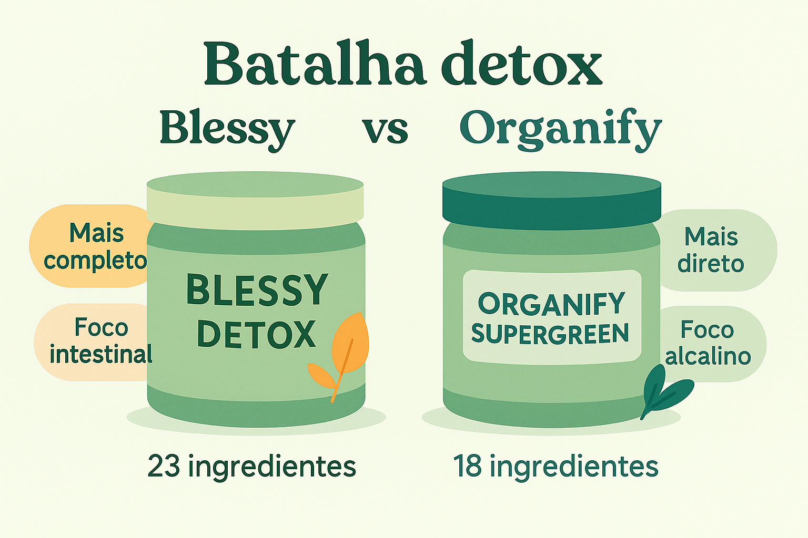

Resveratrol, CoQ10, ALA ou Astaxantina Novo
Comparativo completo entre os antioxidantes naturais mais eficazes para prolongar a vida, proteger as mitocôndrias e manter energia celular em alta.
Vitalidade a Dois: Energia e Disposição Novo
Mini protocolo natural para casais com foco em mais energia, desempenho e bem-estar físico.

Sono em Sintonia: Dormir Melhor a Dois Novo
Veja como 5 substâncias naturais podem transformar a qualidade do sono do casal e fortalecer a conexão noturna.

Energia e Libido a Dois: Suplementos Naturais para o Amor
Descubra os melhores suplementos naturais para fortalecer o desejo, a energia e o vínculo entre casais.
Resveratrol, CoQ10, ALA ou Astaxantina
Comparativo entre os antioxidantes mais estudados para longevidade, energia e proteção mitocondrial.

Insônia e Qualidade do Sono
Conheça soluções naturais com eficácia real para combater a insônia e dormir melhor.
Blessy Suplemento Detox: Vale a Pena?
Análise técnica do suplemento que viralizou: composição, benefícios e comparação com concorrentes.
Fitoterápicos para Saúde Intestinal
Descubra substâncias naturais com ação prebiótica, digestiva e anti-inflamatória.